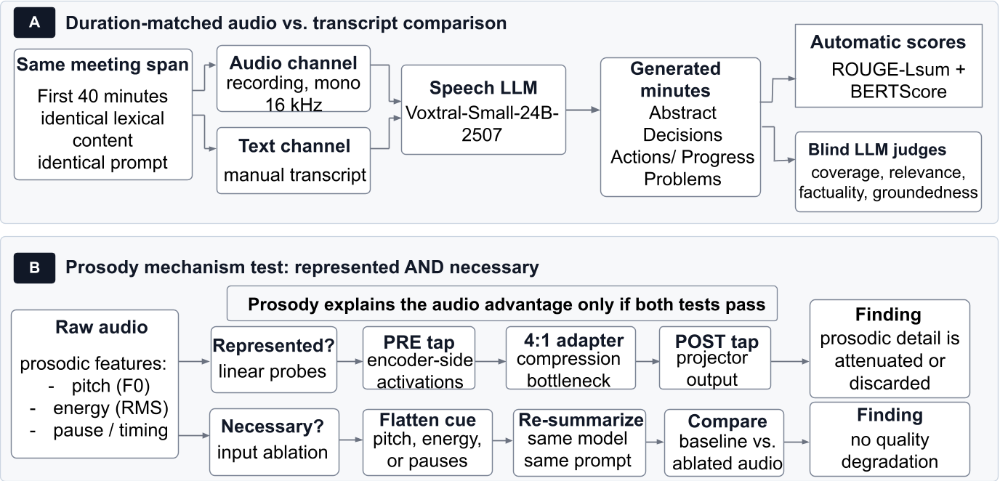

Speech LLMs can summarise a meeting straight from audio, and everyone assumes that beats the transcript because audio keeps the prosody — pitch, loudness, timing. This study shows the audio advantage is narrow, corpus-specific, and not explained by prosody at all.
Rich acoustic variation — but does the model use it?
A flat transcript — yet it covers more of the meeting.
Not just "does audio help?" but how far it helps, where, and whether prosody is the mechanism behind it.
Part A compares audio against a duration-matched transcript so any difference comes from the channel, not coverage. Part B asks whether prosody is both represented in the model and necessary for the summary — it only explains the advantage if both hold.

Controlled (A) audio–text comparison and (B) prosody mechanism test.
Toggle corpus and metric. Semantic quality (BERTScore) and lexical overlap (ROUGE-Lsum) tell different stories — and AMI and ICSI split cleanly.
Linear probes read the model's own activations before and after the 4:1 multimodal adapter. The adapter compresses the representation into a bottleneck — and fine acoustic detail doesn't make it through.
| Prosodic cue | AMI pre→post | ICSI pre→post |
|---|
Each cue is flattened in the raw audio, the model re-summarises, and the result is compared to baseline. If a cue mattered, quality should drop.
Two modality-blind LLM judges scored every summary on four dimensions. Neither channel wins outright — they serve different priorities.
Three speech LLMs were screened on AMI. Only one showed an audio edge on both metrics — so the study focuses on explaining that advantage, rather than claiming to represent speech LLMs in general.